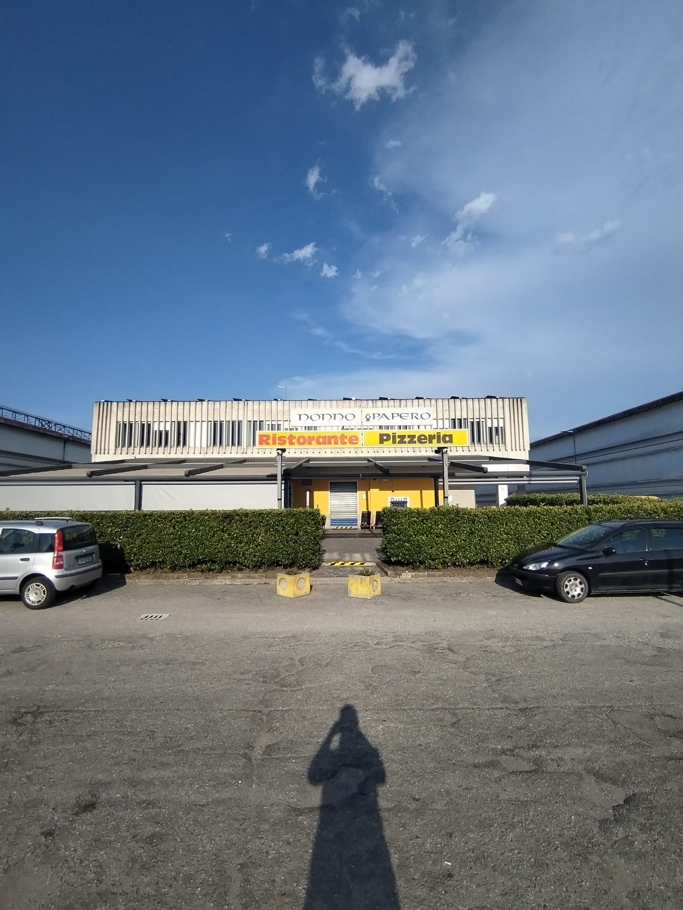
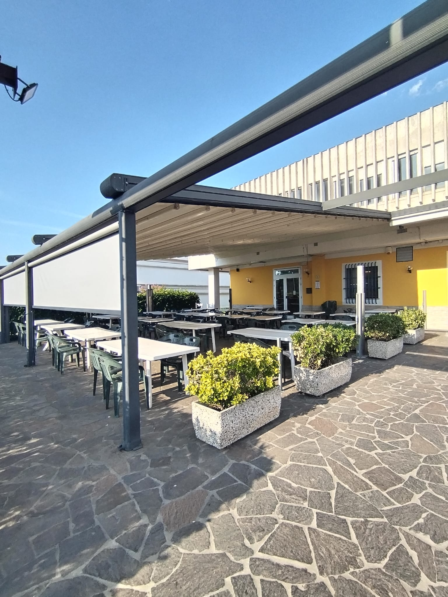
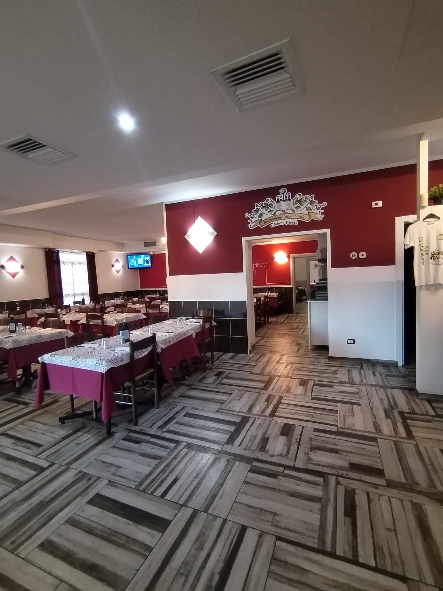
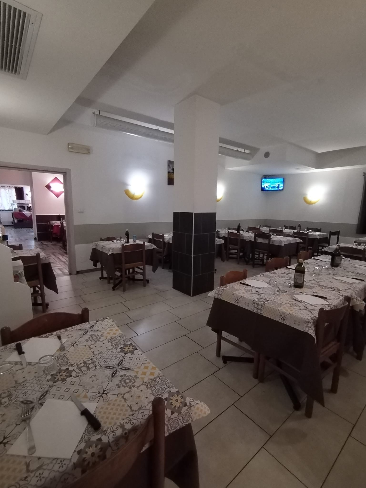
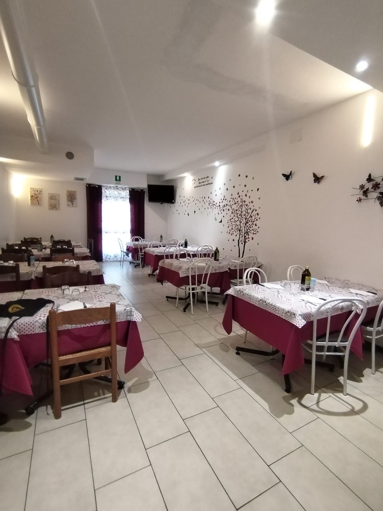
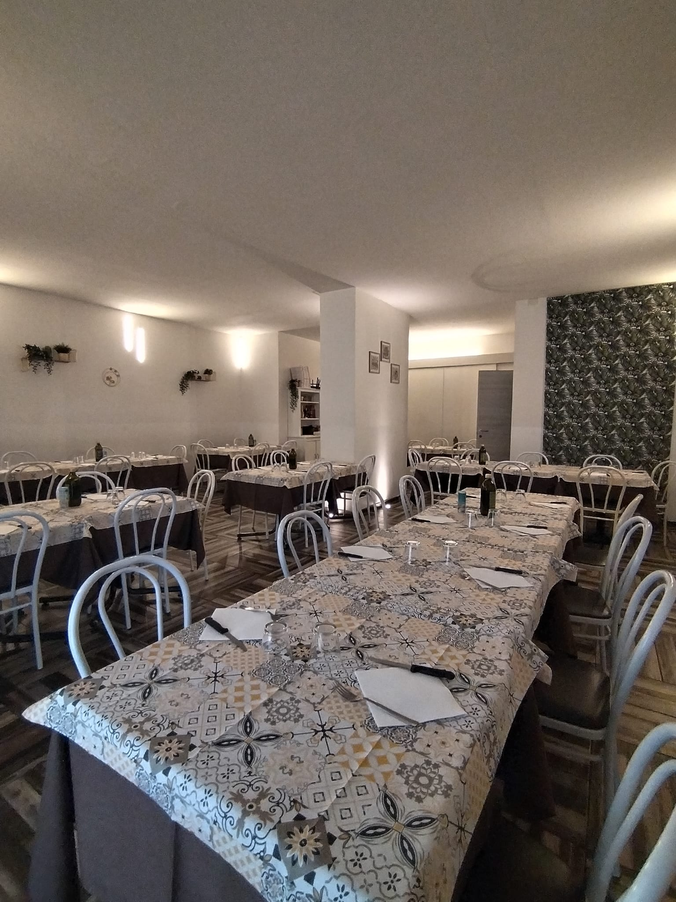

Il nostro locale
Il ristorante Nonno Papero accoglie ogni giorno i propri clienti in un ambiente familiare, caldo e confortevole, dove tradizione e ospitalità si incontrano per regalare un'esperienza piacevole a tutti.
Le nostre sale sono spaziose e luminose, ideali sia per una cena romantica, sia per pranzi in famiglia, cerimonie, compleanni ed eventi. Ogni ambiente è stato pensato per far sentire gli ospiti come a casa.
Negli anni il locale è stato rinnovato e migliorato, mantenendo però lo spirito che da sempre caratterizza il Nonno Papero: semplicità, cordialità e attenzione ai dettagli.
Il nostro obiettivo è offrire non solo una buona cucina, ma anche un'atmosfera accogliente, dove ogni cliente possa trascorrere momenti piacevoli in compagnia.
Le nostre sale





